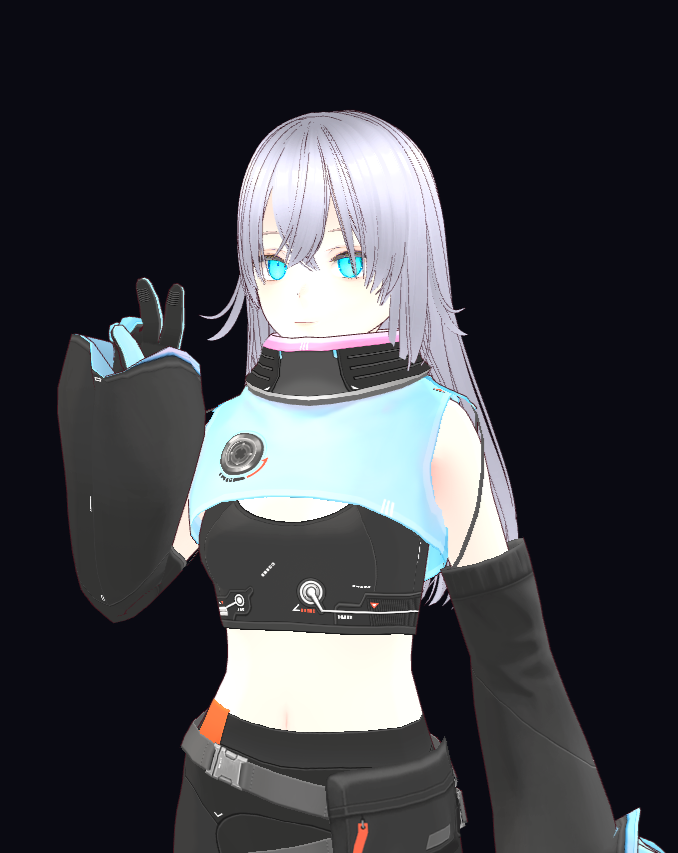

aidiy_hermes は HTTP サーバーとして常駐せず、AiDiy のコードパネルから subprocess で呼び出される on-demand な実行体です。
`backend_hermes` は常駐 HTTP サーバーではない。
`_start.py` の常駐起動対象ではない。
`backend_server/AIコア/AIコード_cli.py` から subprocess で起動される。
`backend_hermes` は AiDiy に統合された on-demand のコードエージェント CLI です。常駐 HTTP サーバーではない。
`_start.py` の常駐起動対象ではない。`_setup.py` / `_cleanup.py` の対象。